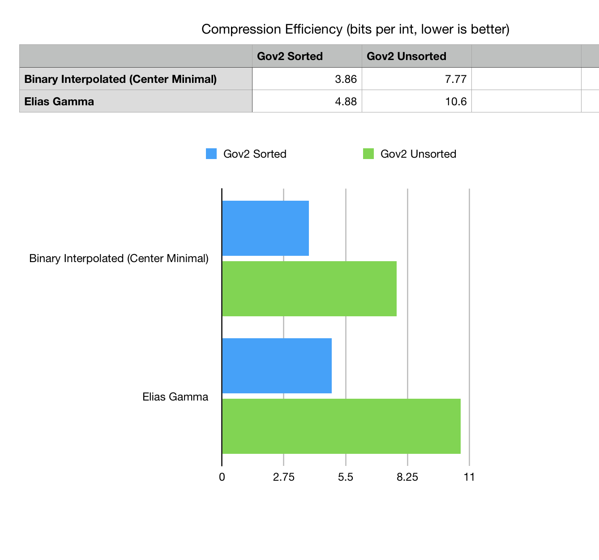
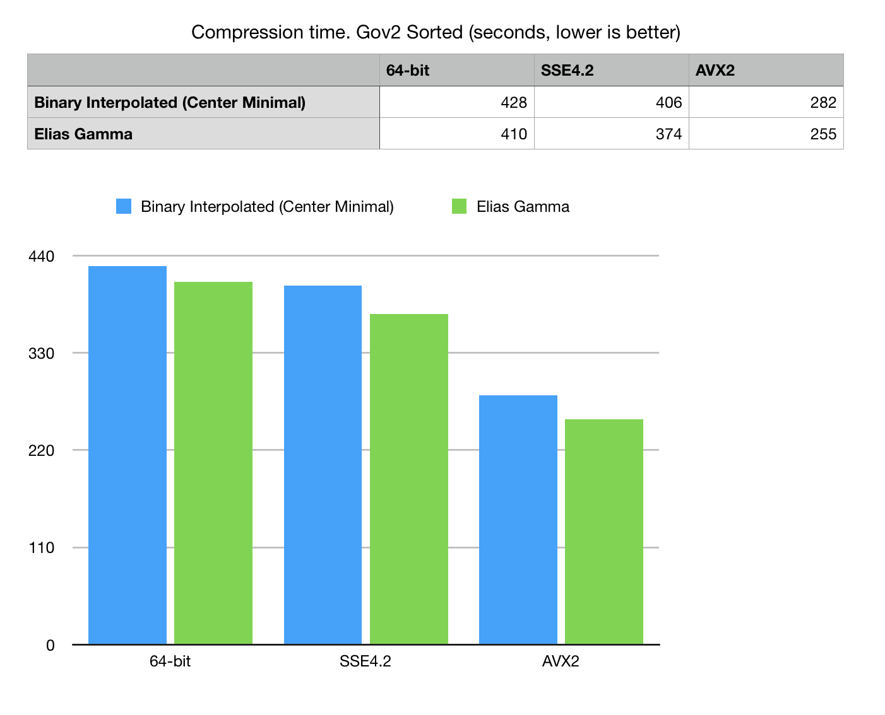
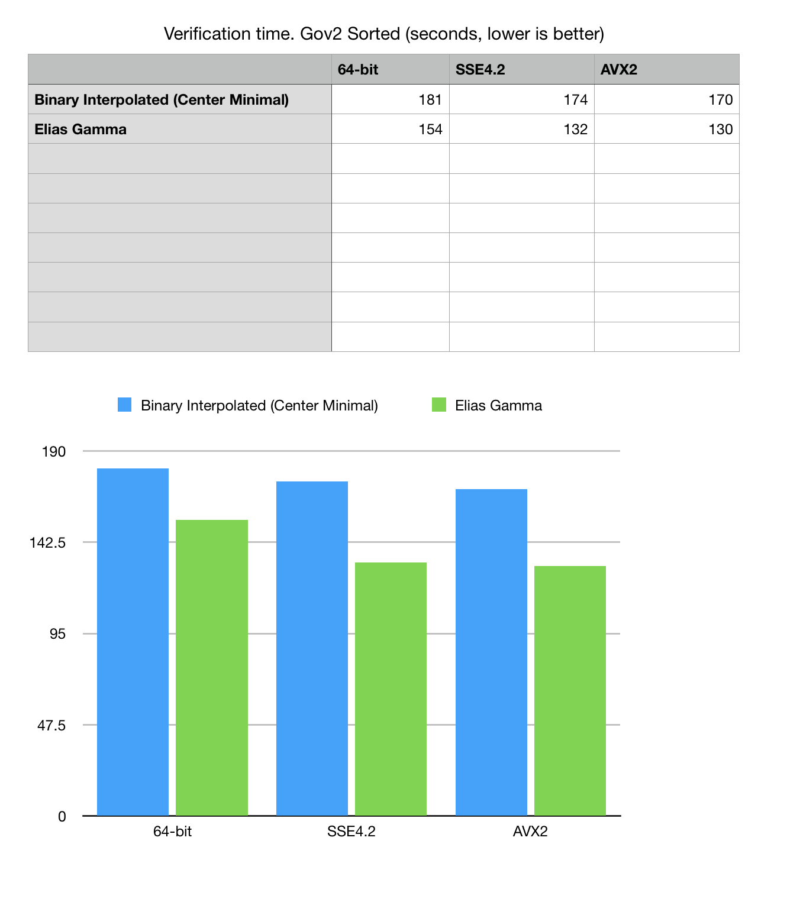
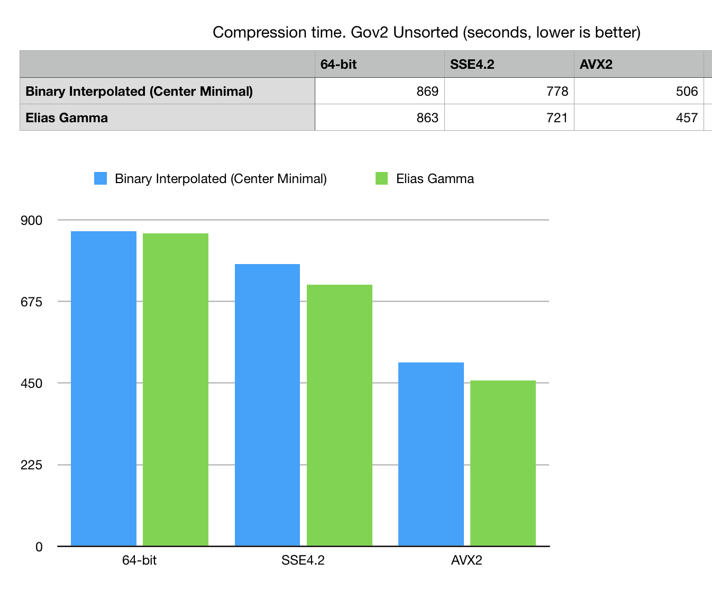
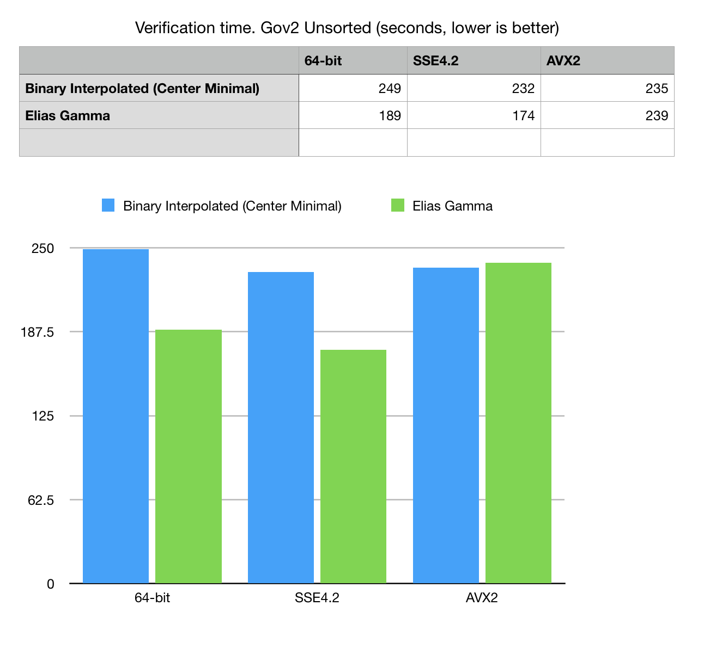

BitMagic 5.0.0 Notes on Binary Interpolated compression
Anatoliy Kuznetsov, July 20, 2019Introduction
BitMagic Library v.5.0.0 implemented new type of compressed serialization. The change is to add Binary Interpolated coding scheme. This application notes documents collected benchmarking statistics, thoughts and observations.
Sorted lists are commonly used in information retrieval and databases or as part of a upper level application compression scheme. Bit-vectors are often used as a representation of sorted lists and implement highly efficient set-theoretical operations such as set union (OR), set intersect (AND), etc.
Another interesting application is bit-transposed succinct vectors, where each bit-plain is a separately encoded bit-vector. All such containers are to be serialized and saved at some point, which is where better compression plays an important role in optimizing storage costs operation latency and performance per watt efficiency.
Better compression pays off, because disk is the new tape!
Serialization-compression notes
BitMagic uses partitioned scheme, splitting the source bit-vector into smaller blocks of 64K bits each. Compression scheme follows this pattern adaptively picking the best representation for each block. This scheme was proposed by Culpepper and Moffat as HYB+M2 and this idea was implemented in BitMagic library as an adaptive scheme which keeps some bit-blocks as bit-blocks maybe with minimal compression but tries to compress sparse blocks using delta differential coding with Elias Gamma step.
BitMagic v5.0.0, tries an alternative second stage, it uses Interpolative Coding (with Centered Minimal code assignment) for blocks which were selected as compression targets. The overall scheme remain hybrid with a number of heuristics, for example it detects very dense blocks and is capable to encode complementary positions of ‘0’, instead of ‘1’s. Optimizations like these are important for compression of dense bit-sets which are often formed in applications other than text retrieval.
Testing rig
Mac OS High Sierra, 3.2 GHz Intel Core i5, 24 GB 1867 MHz DDR3 Apple LLVM version 10. Ambient room temperature 27C (turns out to be a factor too). All I/O comes and goes to NVMe SSD.
Testing scenarious
-
Compression scenario. Loads data from little endian size prefixed raw dump,
makes minimal verification of data integrity, imports data into
bm::bvector<>, serializes it to disk. - Verification - retrieval scenario. Loads data from initial dump and from compressed collection, performs a deserialization and decode pass on bm::bvector<> to make sure it matches the original.
As you can see, the measurements include various I/O factors and elements of application logic (verification), which makes it more difficult to compare. We see this experiment as more holistic way to study the compression code as a part of a bigger application ecosystem. This is important for practical engineering.
We can tweak the test set later to measure compression-decompression isolate from QC factors.
Benchmark data are derived from Gov2 data set. Experiment touches two different datasets of inverted lists: Gov2 Sorted and Gov2 Unsorted. Sorted dataset preprocessed the input pages so data from one site comes more together, forming better runs in the inverted lists.
Measurements statistics

Fig 1. Compression efficiency comparison bits per one integer listed in Gov2 compressed collection.
Method excludes the BLOB size prefix, specific for this variant of data dump.

Fig 2. Compression time in seconds on Gov2 Sorted dataset.

Fig 3. Read, decode and verification time for Gov2 Sorted dataset.

Fig 4. Compression time in seconds on Gov2 Unsorted dataset.

Fig 5. Read, decode and verification time for Gov2 unsorted dataset.
Optimization and performance observations
Both Elias Gamma and Interpolated Coding algorithms at this moment do not include any SIMD optimizations. The differences in performance comes from block to int conversion algorithms and compression assessment, which are benefit from use of SSE4.2 with POPCNT and AVX2.
Interpolative compression offers benefits in storage volume, compression algorithm is CPU intensive, and not memory intensive, which is good - it means it should be possible to significantly improve performance with SSE4.2 and AVX2 vectorization.
Other implementation of BIC provided in [1] by Giulio Ermanno Pibiri offers good reference code. Bitmagic ofers independent implementation with includes number of changes, related to performance transforming one recursive call into a loop(tail call recursion elimination), replacing divisions with logical ops, some branchless techniques to help CPU in code pipelining.
GitHub
Testing framework and instructions are available on GitHub. GitHub
Acknowledgements
Benchmarking sets provided by Daniel Lemire and Leonid Boytsov.
References
[1] Giulio Ermanno Pibiri. On Implementing the Binary Interpolative Coding Algorithm
http://pages.di.unipi.it/pibiri/papers/BIC.pdf
GitHub
GitHub
[2] Alistair Moffat and Lang Stuiver. 1996. Exploiting Clustering in Inverted File Compression. In Data Compression Conference. 82–91.
[3] Alistair Moffat and Lang Stuiver. 2000. Binary Interpolative Coding for Effective Index Compression. Information Retrieval Journal 3, 1 (2000), 25–47.
[4] Vo Ngoc Anh, Alistair Moffat. Index Compression using Fixed Binary Codewords.
[5] Daniel Lemire, Leonid Boytsov, Nathan Kurz, SIMD Compression and the Intersection of Sorted Integers, arXiv: 1401.6399, 2014
Arxiv